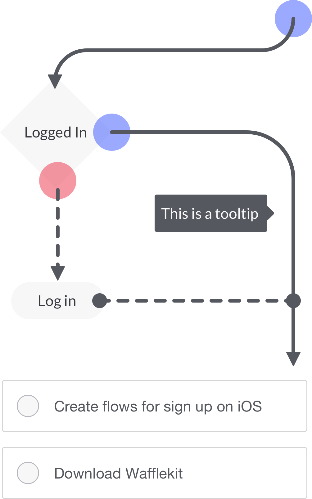

A lightweight wireframing library for Sketch.
200 Symbols, 250 Icons, and 80 Flows. Under 500kb, 100% Free.
Made by Alberto Camacho

visual tablet
Logged in
Log in
Today
Monday, July 9 Create sign up flows (iOS)
Ticket #666 - Make the buttons pop
Download Wafflekit / Save Time
Sync on that meeting about standup
Made by Alberto Camacho